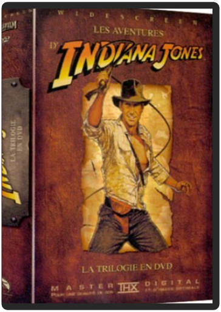
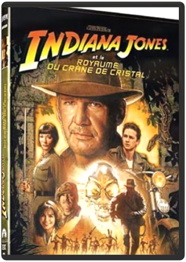
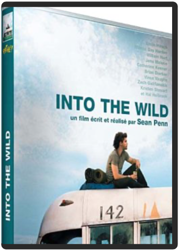
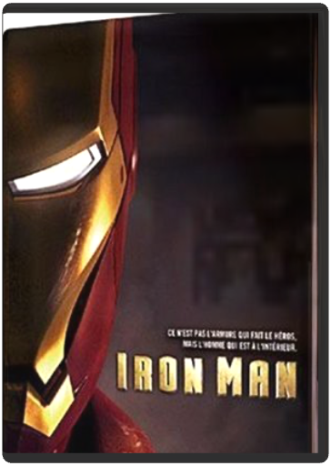

 indiana jones : la trilogiesteven spielberg  Voici des années qu'on l'attendait en DVD cette série de films qui marqua à jamais une génération qui était ado au début des années 80. George Lucas et Steven Spielberg, alors au sommet de leur art, avant que celui-ci ne tombe dans une sorte d'académisme fructueux et tape-à-l'il, unissaient leur génie créatif pour révolutionner le cinéma d'aventures : ainsi naissait Indiana Jones (Harrison Ford, fraîchement délesté des pistolets laser de Han Solo), qui allait, en un coup de fouet, donner un sacré coup de vieux à des décennies de cinéma bourlingueur et exotique . À la fois inspirée d'Allan Quatermain, de Tintin et – cocorico – de L'Homme de Rio, la série des "Indy" reste l'une des plus originales et enthousiasmantes de l'histoire du cinéma. La voilà enfin réunie en un coffret de quatre DVD (un par film, plus un autre entièrement consacré aux bonus). Archéologue casse-cou, maniant aussi bien le fouet que maîtrisant les techniques de la boxe, le professeur Jones parcourt le monde à la recherche des reliques les plus fabuleuses. Dans Les Aventuriers de l'arche perdue, il doit lutter contre les nazis pour retrouver l'Arche d'alliance, aux pouvoirs de destruction insoupçonnés. Dans le trépidant Indiana Jones et le temple maudit, il combat une secte sanguinaire qui terrorise une région reculée de l'Inde. Quant à Indiana Jones et la dernière croisade, il voit notre aventurier préféré rechercher, en compagnie de son père irascible (Sean Connery, plus que parfait dans le rôle), un objet sacré qui rend immortel son propriétaire : la coupe dans laquelle but le Christ lors de son dernier repas ! Mythologie, action, beaucoup d'humour aussi, des cascades, du fantastique, de l'horreur Outre les trois films restaurés et transférés en DVD avec le soin que l'on connaît à George Lucas, on retrouve donc dans ce coffret un 4e DVD réservé aux bonus. Et là encore, les fans d'Indy seront comblé : un making of de près de 2 heures signé par Laurent Bouzereau, grand spécialiste du genre, des interviews inédites et des archives tour à tour étonnantes – les essais de Tom Selleck –; ou émouvantes (l'interview de River Phoenix), les précisions de John Williams sur la bande originale de la série, et une foule d'infos sur les parties plus techniques des films. Véritablement, un coffret d'exception. —Jean-Pascal Grosso  indiana jones et le royaume du crâne de cristalsteven spielberg 1957, en pleine Guerre Froide. Indy et son copain Mac viennent tout juste d?échapper à une bande d?agents soviétiques à la recherche d?une mystérieuse relique surgie du fond des temps. De retour au Marshall College, le Professeur Jones apprend une très mauvaise nouvelle : ses récentes activités l?ont rendu suspect aux yeux du gouvernement américain. Le doyen Stanforth, qui est aussi un proche ami, se voit contraint de le licencier. A la sortie de la ville, Indiana fait la connaissance d?un jeune motard rebelle, Mutt, qui lui fait une proposition inattendue. En échange de son aide, il le mettra sur la piste du Crâne de Cristal d?Akator, relique mystérieuse qui suscite depuis des siècles autant de fascination que de craintes?  into the wildsean penn Tout juste diplômé de l'université, Christopher McCandless, 22 ans, est promis à un brillant avenir. Pourtant, tournant le dos à l'existence confortable et sans surprise qui l'attend, le jeune homme décide de prendre la route en laissant tout derrière lui. Des champs de blé du Dakota aux flots tumultueux du Colorado, en passant par les communautés hippies de Californie, Christopher va rencontrer des personnages hauts en couleur. Chacun, à sa manière, va façonner sa vision de la vie et des autres. Au bout de son voyage, Christopher atteindra son but ultime en s'aventurant seul dans les étendues sauvages de l'Alaska pour vivre en totale communion avec la nature.  La comédie qui a ému plus de 18 millions de Français à voir ou à revoir !À la suite d'un accident de parapente, Philippe, riche aristocrate, engage comme aide à domicile Driss, un jeune de banlieue tout juste sorti de prison. Bref la personne la moins adaptée pour le job. Ensemble ils vont faire cohabiter Vivaldi et Earth Wind and Fire, le verbe et la vanne, les costumes et les bas de survêtement...Deux univers vont se télescoper, s'apprivoiser, pour donner naissance à une amitié aussi dingue, drôle et forte qu'inattendue, une relation unique qui fera des étincelles et qui les rendra...intouchables.  iron man - édition collectorjon favreau Boîtier métal prestige |

Julien
Collection Total:
2 053 Items
2 053 Items
Last Updated:
May 23, 2024
May 23, 2024

 Made with Delicious Library
Made with Delicious Library